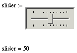
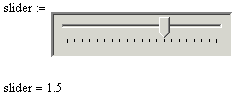
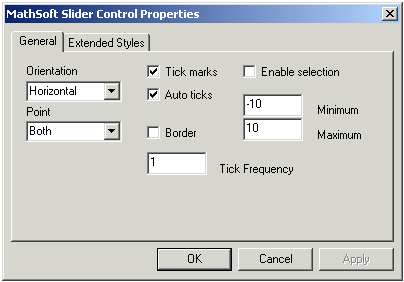

Mathsoft Slider Control |
| Overview |
The Mathsoft Slider Control allows you to accept user input in the form of relative position on a slider. The default output is an integer between 0 and 100, determined by the position of the slider. You can change many of the properties that affect the appearance of a slider, such as its output range, though its Properties dialog, or by scripting its class attributes.
| Simple Annotated Example |
This example shows the default script and the resulting behavior of the Slider control in the worksheet.
Sub SliderEvent_Start()
Rem TODO: Add your code here
End Sub
Sub SliderEvent_Exec(Inputs,Outputs)
Outputs(0).Value = Slider.Position
End Sub
Sub SliderEvent_Stop()
Rem TODO: Add your code here
End Sub
Sub Slider_ValueChanged()
Slider.Recalculate()
End Sub

In the script, notice that there are four events, Start, Exec, Stop, and ValueChanged. The Exec event is where inputs and outputs can be processed, including converting the selection from the default integer output to other numerical output. Procedures for formatting the slider itself can be taken care of in the Start event or using the Properties dialog box. The ValueChanged event is generally used to re-execute the control after the user has changed their selection, though this event might fire other actions, such as alerts or script-based calculations. Here's a slightly modified piece of script and its effect on the appearance and behavior of the control:
Sub SliderEvent_Start()
Slider.MinRange = -10
Slider.MaxRange = 10
Slider.TickFrequency = 1
Slider.Point = 2
End Sub
Sub SliderEvent_Exec(Inputs,Outputs)
Outputs(0).Value = Slider.Position/2
End Sub
Sub SliderEvent_Stop()
Rem TODO: Add your code here
End Sub
Sub Slider_ValueChanged()
Slider.Recalculate()
End Sub

In this script, the values that control the range and frequency of ticks on the slider have been set. These could have also been set in the Properties dialog. Also, in order to get decimal output, all values have been divided by 2. You can perform any algebraic conversion on the Slider.Position value in order to get the output you want, but this must be done in the script, not through the Properties dialog. Additionally, the pointer's appearance has been changed. You must resize the control in the worksheet itself using the region sizing handles.
If you would like to change the appearance of a slider without using the script, you can use the Properties Dialog box by right-clicking on the control and selecting Mathsoft Slider Control Object > Properties from the menu. You see:

Note that you must enter integer values for Min, Max, and Tick Frequency in the Properties dialog. To get non-integer values, you must use the script.